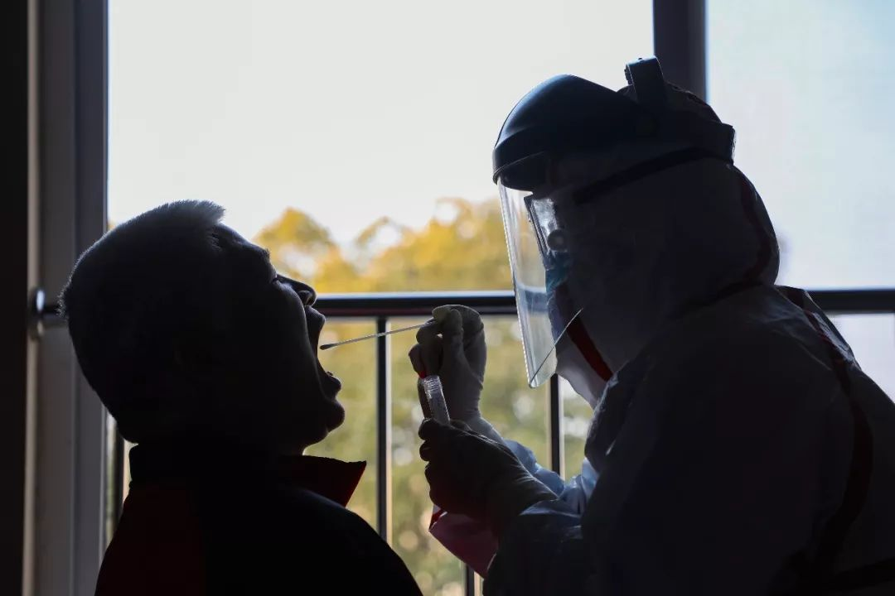

一位治愈患者的抗疫日记：走过生死考验，我总结了这六个建议 | 深网
原文链接 备份链接 作者 | 穆文，武汉某高校教师 （为保护作者隐私，穆文为化名） 出品｜深网·腾讯小满工作室 欢迎下载腾讯新闻APP，阅读更多优质资讯 _编者按：通过湖北各城普通民众的视角和抗疫行动，记录这一段难忘的历史。是为抗疫日记系 …
新型冠状病毒无症状感染者出现，令许多公众担心这会让病毒传播更佳防不胜防。事实上，大多数病毒、细菌导致的疾病都可能出现“无症状感染者”。新型冠状病毒的无症状感染者出现需要引起我们的警惕，但不必恐慌。
实习记者 | 李秀莉 张佳婧
记者 | 徐菁菁
无症状感染是新冠特有的吗？
什么是无症状感染？这要从人体免疫系统的运作说起。
病毒感染人体后，人体的免疫系统并非坐以待毙，有两道防线会对病毒进行应答。第一道防线是天然免疫，指人体的天然屏障，包括我们的皮肤、口腔里的唾液、呼吸道里的一些分泌物等等，它们的作用是把病原阻挡在人体外。天然免疫又称非特异性免疫，每个人生下来就有，不针对某特定抗原。
获得性免疫则是人体抵抗病毒入侵的第二道防线，它只针对某一种具体的病原体。获得性免疫分为细胞免疫和体液免疫。以细胞免疫为例，淋巴细胞、单核细胞、树突状细胞、巨噬细胞等细胞活化为对入侵病原进行应答的活性淋巴细胞，尤其是T淋巴细胞和B淋巴细胞，共同发挥抗感染、免疫监视、清除病原等作用。
在针对病毒的免疫应答中，人体可能会出现症状。根据《柳叶刀》杂志发表的研究，此次新型冠状病毒病例的常见临床症状是发烧（免疫细胞产生致热因子，抑制病毒的繁殖）、咳嗽（将病毒从体内排出）、呼吸困难（这一方面是因为病毒破坏了肺部组织，另一方面是因为新冠病毒与人肺泡Ⅱ型上皮细胞ACE2受体结合后经过一系列过程，激发人体自身的免疫系统过度攻击自身组织，引起急性肺损伤）。由此可见，新冠病毒体现的绝大多数症状都是人体免疫应答的表现。

图 | 视觉中国
“我们所谓的有症状和没有症状，实际上是病毒感染了人体，把人体作为一个新的寄主之后，人体所产生的免疫反应和病毒抗衡的结果。而每一个个体这种抗衡能力是非常不一样的。”一位不愿具名的分子免疫学专家告诉本刊。
两种情况都会造成“无症状”：一是相对于人体的免疫力而言，病毒的数量少，毒性弱，很快就被消灭掉了；二是机体尚没有有效地激活其免疫反应。在实际的临床医学实践中，有症状和无症状之间的界限是很模糊的。一个因为流感病毒打了两个喷嚏的患者，在不知情情况下康复了，一般也会被归为无症状感染者。简言之，无症状感染可以理解成机体发生感染，但没有表现出明显的医学上的临床表象（例如打喷嚏、流鼻涕等），尤其是没有表现出明显的临床病理性症状（发烧、肺炎等）。
新型冠状病毒的无症状感染者出现以后，一些人误认为这是该病毒的独特表现。事实上，大多数细菌、病毒导致的疾病都可能出现“无症状感染者”。
据统计，约有 1%～5% 的伤寒患者，在症状消失后一年或更长时间内，仍可在其粪便中检出伤寒杆菌细菌，被称为无症状带菌者。
人巨细胞病毒（HCMV）属于疱疹病毒家族。这种病毒对于病理性和生理性免疫低下人群，比如有发育性免疫缺陷的胎儿和新生儿的威胁很大，也是导致艾滋病患者和器官、骨髓移植患者患其他严重疾病的可能性和病死率增高的重要病因之一。但其致病性弱，其感染在我国极其广泛，有调查显示，一般人群 HCMV 抗体阳性率为 86%～96%，孕妇 95% 左右，婴幼儿期为 60%～80%，绝大多数人都无症状。

远征 摄
《流行病学与传染》（Epidemiology and Infection）2019年刊发的美国哥伦比亚大学研究者的一篇论文显示，两种冠状病毒HCoV-229E和HCoV-OC43会造成普通感冒，在这两种病毒的感染者中，大约70%的人并不表现出症状。被流感病毒感染后，大约40%的人会是无症状感染者。此外，新加坡南洋理工大学李光前医学院教授安妮丝·怀尔德·史密斯（Annelies Wilder-Smith）2005年的一项研究称，SARS病毒有10%左右的无症状感染者。世界卫生组织中东呼吸综合征（MERS）研究小组的报告称，MERS病毒也有10%左右的无症状感染者。
一般而言，我们可以通过两种方式判断无症状感染者：一是检测其身体内是否有病毒基因或者病毒特异性蛋白质；二是检测其体内是否有针对该病毒的产生的特异性抗体。如果有人体内能够检测到抗体，但是无法检测到病毒，则说明他经历了病毒感染，但已经自愈或治愈。
目前，人们还在建立检测新型冠状病毒抗体的方法。《新型冠状病毒感染的肺炎病例监测方案（第三版）》将无症状感染者的定义为：无临床症状、但呼吸道标本新型冠状病毒病原学检测阳性。关于这类感染者出现的原因，上海医疗救治专家组组长、复旦大学附属华山医院感染科主任张文宏在接受媒体采访时表示：可能是由于他们的免疫应激反应没那么强，临床表现比较潜行，也可能是由于患者的机体异质性可与病毒和平共处。
出现无症状感染者需要恐慌吗？
公众的普遍担心是无症状感染者会成为防不胜防的传染源。目前为止，已有中国、德国和日本的科学家报告了未出现症状的新冠病毒传染案例，但其中存在一些疑问。1月30日，国际顶尖医学期刊《新英格兰医学杂志（NEJM）》发表了关于德国四名感染新型冠状病毒患者的论文。文章称，1月20日和21日，一名来自上海的女商人参观了慕尼黑附近的一家公司，在那里她与后来感染的四名患者中的第一个人见面。在逗留期间，她的健康状况一直都很好，没有感染的迹象或症状，但在返回中国的航班上发病。
这篇文章很快被证实存在漏洞。文章作者并没有和这位女士进行过真正交谈。巴伐利亚州卫生和食品安全管理局随后与上海患者进行的电话交谈结果发现，她在德国期间确实出现了症状。据知情人士透露，她感觉疲惫、肌肉疼痛，并服用了退烧药扑热息痛。第三军医大学呼吸学硕士蒋永源告诉本刊，德国论文中的情况在临床上叫做非患者自述的症状，非患者自述的病史可信度是非常低的。

人们对于新型冠状病毒的所知还非常有限，从防疫的角度来说，谨慎是必须的。2月3日下午，国家卫健委发布的《新型冠状病毒感染的肺炎诊疗方案（试行第五版）》指出：“无症状感染者也可能成为传染源”。
但目前，专家们普遍认为，不必对无症状感染者的出现感到恐慌。2月3日，世界卫生组织在给公众的指导中称，“基于现有数据，新型冠状病毒主要是由已出现症状的患者传播。世卫组织已了解到感染者有在出现症状之前传播新型冠状病毒的可能性。根据对中东呼吸综合征（MERS）的观察，其他冠状病毒通过无症状患者传播的情况非常罕见。因此，无症状患者可能不是病毒主要的传播者。”
2月3日，湖北省召开疫情防控工作新闻发布会。国家卫生健康委专家组成员、北京地坛医院感染二科主任医师蒋荣猛在发布会上表示，作为呼吸道传染病，排出病原体，需要有症状才可以传染，比如咳嗽可以把病毒排出来。如果没有症状，通常认为即便有传染性也是非常弱的，所以没有必要太担心没有症状的感染者会大规模传染他人。
2月5日，国家医疗专家组成员李兴旺在新闻发布会上表示，无症状感染者的病毒载量可能比较少，其传播力也会较弱。1月28日，国家卫生健康委员会的新闻发布会上，专家团也提到，现在更多的无症状感染者还是在密切接触者中发现的，这些密切接触者按现在的要求，都在进行医学观察，这样也就保证了我们对传染源的控制。”
远征 摄
那么，新型冠状病毒会像艾滋病毒一样存在长期的无症状感染者吗？答案很可能是否定的。剑桥大学病毒学助理研究员韩越告诉本刊，这种可能性不大。“如果超过两周没有出现明显的临床症状，那么基本可以说病毒已经被人体免疫系统清除。”
艾滋病毒则是一类非常特殊的RNA病毒，它能够将RNA转录成DNA，并整合进宿主的基因组内，以此来躲避免疫系统的攻击。上述不愿具名的专家告诉本刊，非典病毒和新冠这类RNA病毒的稳定性差，极易降解，在非活体细胞存在的环境中寿命不会很长，在感染者体内的寿命也取决于自身的免疫力和抗病毒药物的有效干预。
感染者通常只有两个结果：要么免疫力战胜病毒，治愈，病毒完全消失；要么病毒毒力猖狂，导致感染细胞增多，器官功能受损。如果病毒毒力继续横行，将导致危及感染者生命。不过，患者死亡，并不意味着病毒消失，尸体中依然有大量病毒存在，彻底清理和消毒感染环境，杀死存活的病毒非常重要。

⊙文章版权归《三联生活周刊》所有，欢迎转发到朋友圈，转载开白请联系后台。未经同意，严禁转载至网站、APP等。
李秀莉
微信扫一扫赞赏作者 赞赏
长按二维码向我转账
受苹果公司新规定影响，微信 iOS 版的赞赏功能被关闭，可通过二维码转账支持公众号。
原文链接 备份链接 作者 | 穆文，武汉某高校教师 （为保护作者隐私，穆文为化名） 出品｜深网·腾讯小满工作室 欢迎下载腾讯新闻APP，阅读更多优质资讯 _编者按：通过湖北各城普通民众的视角和抗疫行动，记录这一段难忘的历史。是为抗疫日记系 …
原文链接 备份链接 21.01.2020本文字数：3771，阅读时长大约6.5分钟 导读：“武汉肺炎是否人传人”这个问题，一直受外界关注。在官方没有明确确认之前，公众的自我防护也由此减弱，直到北京、上海、深圳出现新发病例，公众才开始真正 …
原文链接 备份链接 凤凰新闻客户端 凤凰网在人间工作室出品 1月28日下午两点，一位在武汉隔离病房的母亲刚刚吸出一些母乳。她有两个孩子，小的还在哺乳期。这是向松鼠哥求助的200多名新冠肺炎感染者之一。 松鼠哥是一名HIV感染者。1月28 …
原文链接 备份链接 _ 气溶胶、消化道是否为传播途径在新冠肺炎疫情中牵动人心，在等待医学界给出明确答案时，必要的防护仍是关键，但防护过度则大可不必 _ 文 |《财经》记者 信娜 孙爱民 实习记者 朱贺 **图 | 李斯洋 ** 编辑 | …
原文链接 备份链接 2月8日，上海市疫情防控工作领导小组举行的新闻发布会上，上海民政局副局长曾群表示，目前可以确定的新冠肺炎传播途径主要为直接传播、气溶胶传播和接触传播。 “气溶胶传播”被明确为新冠肺炎传播途径之一，引发了热议。就在3天 …